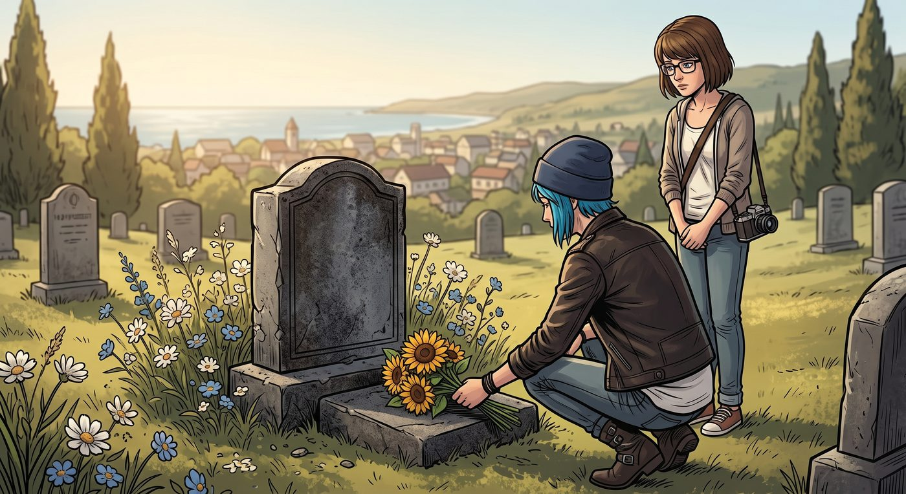

故人

一、廚房裡的抱怨
晚飯後,Chloe 窩在餐桌旁,想起白天那場網路罵戰,還是覺得有點窩火,忍不住又碎碎念了幾句。
「說我厭女,」她翻了個白眼,「我這輩子談過的對象都是女生,這個指控本身就好笑到讓人不知道該氣還是該笑。」
David 在旁邊擦拭著剛保養好的裝備,頭也沒抬:「網路上的邏輯,向來不講究這個。」
Chloe 換了個話題,眼睛一亮:「老兵,你說,咱們去打一場 wargame 怎麼樣?我最近手癢。」
「除非妳自己買一整套裝備,」David 語氣毫不猶豫,「不然我勸妳打消念頭。租借的那些裝具,」他皺眉,像是想起什麼不愉快的回憶,「從開業到現在,誰知道被多少人穿過,從來沒好好清洗過,那股酸爽的陳年汗味,混著各種說不清的漬痕——妳穿上去,大概會後悔自己有嗅覺。」
「那靶場呢?」Chloe 不死心,「單純射擊總行吧。」
David 沉默了兩秒,語氣裡帶上一絲說不清是無奈還是感慨的複雜情緒。
「這幾年精神狀況出問題的人是肉眼可見地變多,」他緩緩開口,「加上州裡某些握有話語權的人,推的政策方向越來越保守,本州不少靶場已經明令禁止全自動模式了,連帶著能玩的花樣也越來越少。」他頓了頓,語氣裡透出一絲屬於老兵的懷念,「以前的自由度,現在想找都難找了。」
Chloe聳聳肩,沒再追問,只是把這股沒地方發洩的煩躁感,又壓回了心底。
二、老朋友
「妳知道嗎,」一旁安靜聽著的 Max,忽然開口,「我們好像很久沒去見一些老朋友了。」
「誰?」
「Frank,」Max說,「我前陣子聽說他還在鎮外那邊擺攤,賣熱狗和三明治。」
Chloe 愣了一下,隨即眼神軟了下來:「他還好嗎?」
「聽說他,」Max 想了想,斟酌著用詞,「其實一直有惦記著妳們,只是有次遠遠看到妳活蹦亂跳地在鎮上晃悠,確認妳過得不錯之後,就沒再特地過來打擾——他大概覺得,自己那種生活方式,不太適合出現在妳現在的日子裡。」
Chloe 沉默了片刻,眼眶微微發熱。
「找一天,」她低聲說,「我們該去看看他。」
三、墓前
隔天午後,兩人開車來到鎮外那片安靜的墓園。
風很輕,吹動著墓碑旁一叢半野生的野花。Chloe 蹲下身,把手裡帶來的一小束向日葵——Rachel 生前最喜歡的顏色——輕輕擺在墓碑前。
墓碑上刻著簡單的名字和生卒年份,經過風吹日曬,邊角已經有些風化,但被人定期清理過,看得出常有人來探望。
「嘿,Rachel。」Chloe 蹲在墓碑前,聲音有點啞,「好久沒來看妳了,最近……發生了太多事,一時半會兒不知道從何說起。」
她頓了頓,喉嚨忽然有點發緊,像是有什麼話堵在那裡,遲遲說不出口。
「有件事,」她終於開口,聲音抖得厲害,「我一直沒有正式跟妳說過對不起。」
Max 靜靜地看著她,沒有插話。
「那時候,」Chloe 死死盯著墓碑上的名字,眼淚開始不受控制地滑落,「妳突然消失,我一開始……我一開始真的以為妳是甩下我,自己跑去洛杉磯追夢去了。我恨過妳,恨了好一陣子,覺得自己又被拋棄了一次,像是——像是垃圾一樣被隨手扔掉。」
她的聲音哽咽得幾乎說不下去,深吸了一口氣,才勉強繼續。
「後來才知道,」她閉上眼,眼淚砸在膝蓋上,「那個時候的妳,根本已經……妳根本沒有選擇拋下我的機會。是那個道貌岸然的混蛋,親手把妳埋在那個廢棄的地方,而我卻在心裡罵了妳整整一年,罵妳無情、罵妳自私,罵妳連句道別都不願意留給我。」
「對不起,」她終於哭出聲來,肩膀劇烈地顫抖著,「對不起,Rachel,我不該懷疑妳的,我不該用那種方式想妳的,妳從頭到尾都沒有拋下我,是我自己太蠢,連這點都想不明白。」
Max 伸手輕輕攬住她的肩膀,把她整個人拉進懷裡,沒有說任何安慰的話,只是靜靜地陪著她把這場遲來了太久的道歉,一字一句地說完。
過了許久,Chloe 的哭聲漸漸平息,她抬起頭,用手背胡亂抹了把臉,望著墓碑上那個熟悉的名字,語氣裡多了一絲如釋重負的平靜。
Max 蹲在她身邊,靜靜地陪著,沒有出聲打斷。
「殺妳的那個人,」Chloe 頓了頓,語氣裡帶著一種塵埃落定般的釋然,「早就被繩之以法了,關進去再也出不來了。這件事,我想妳應該早就知道了,但我還是想親口再跟妳說一次。」
風吹過墓園,捲起幾片落葉,打著旋兒飄遠。
「我現在,」Chloe 望向身邊的 Max,眼神柔和下來,「過得不錯。真的,比我自己想像中都好太多。」
Max 輕輕握住她的手,兩人就這樣安靜地蹲在墓碑前,任由午後的陽光斜斜灑落。
「我們會常來看妳的。」Chloe 最後說,聲音很輕,卻很篤定,「這次是真的。」
話音剛落,一隻黃色的蝴蝶,不知從何處翩然飛來,繞著那束向日葵盤旋了兩圈,翅膀在午後的陽光下,透出近乎透明的金黃色澤。
Chloe 的呼吸猛地一滯,整個人僵在原地,死死盯著那隻蝴蝶,眼眶瞬間紅了。
Max 也屏住了呼吸,輕輕握緊她的手,沒有出聲打斷這個瞬間。
那隻蝴蝶似乎並不著急離開,繞著墓碑又低低飛了一圈,才緩緩振翅,朝著遠方一片開闊的草地飄去,身影漸漸融進午後的光線裡,消失不見。
Chloe 怔怔地望著蝴蝶消失的方向,好一會兒才找回自己的聲音,笑中帶著哭腔。
「妳看到了嗎,」她低聲說,像是在問 Max,又像是在問自己,「她聽到了。」
Max 沒有回答「這只是巧合」,只是輕輕靠在她肩上,由著這份溫柔的錯覺——或者不是錯覺——安靜地停留在兩人之間。
離開墓園前,Chloe 回頭望了一眼那束向日葵,在風裡輕輕搖曳,像是某種無聲的回應。
兩人並肩走向皮卡車,誰都沒再多說什麼,只是十指相扣,任由這份沉甸甸卻終於能安放下來的思念,隨著鎮外的晚風,慢慢沉澱。